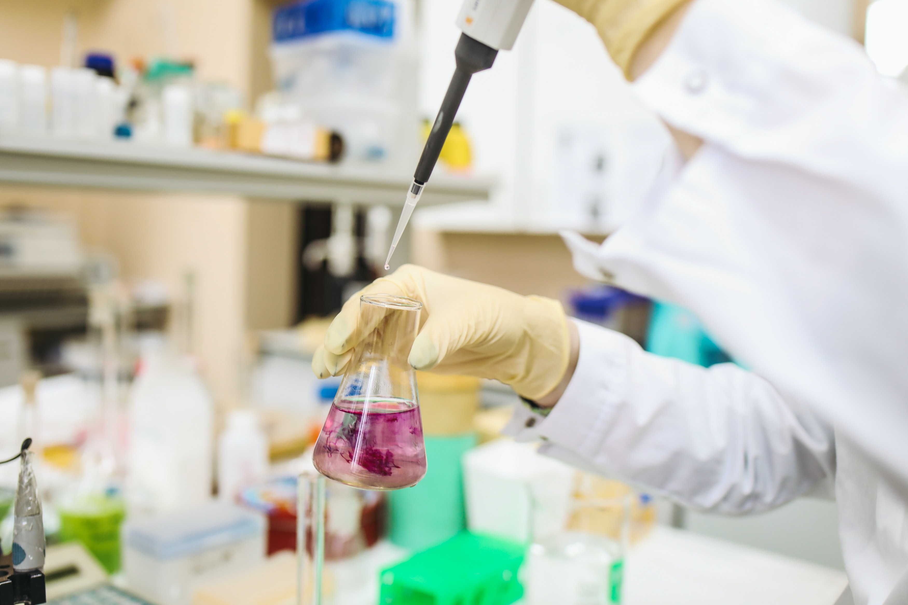
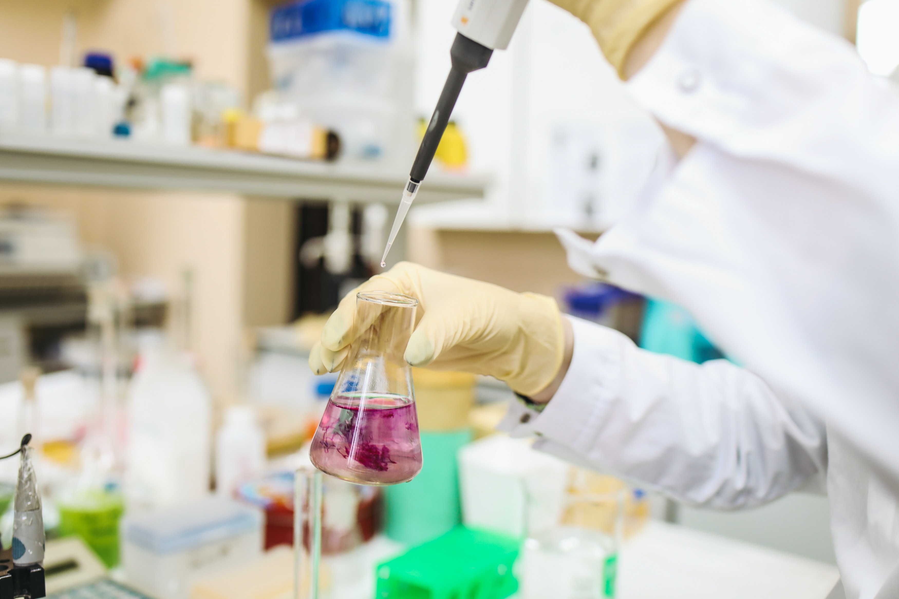
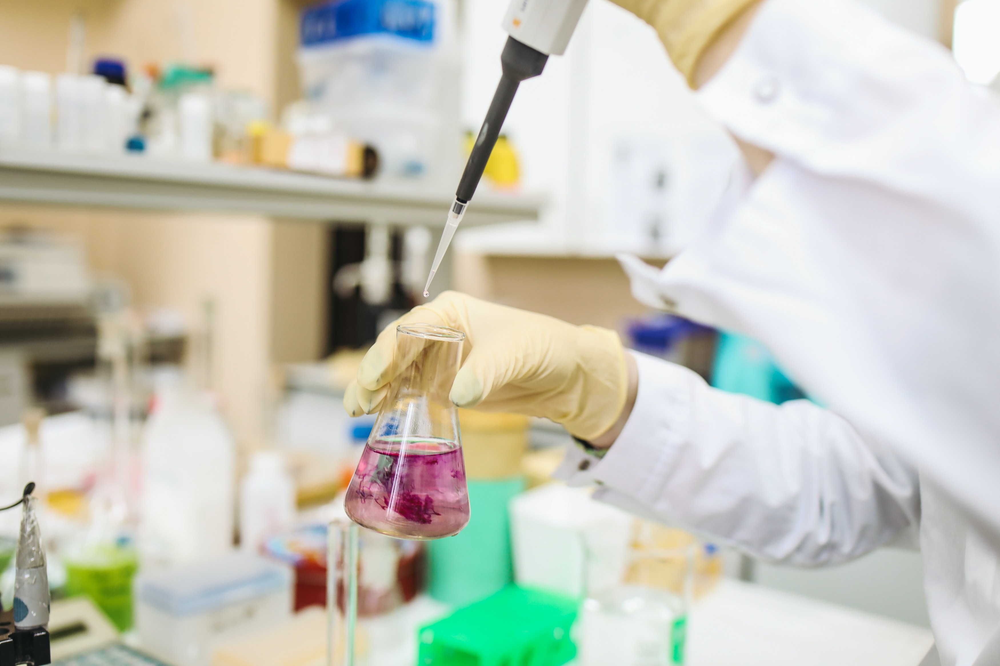
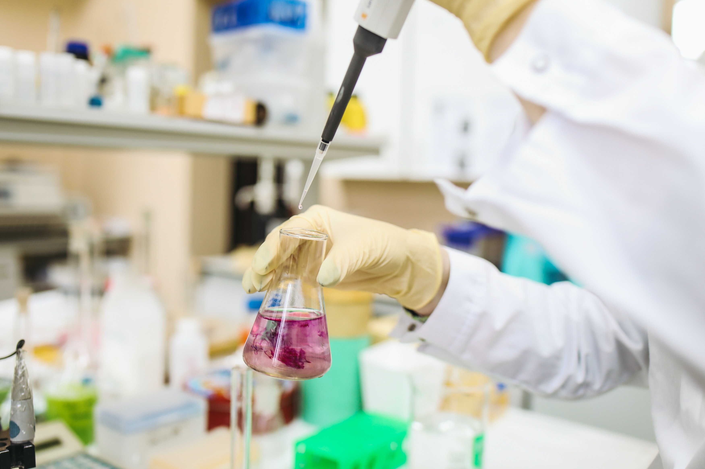

 

Our goal is simply to immerse ourselves in science and have fun learning as a group. We are flexible and would love to take recommendations for club activities! Thanks to Mr. Bennett, Mr. Edmons, and other fantastic teachers in the science department, we have great support and resources at LC. This season we hope to take part in the Science Olympiad, which is a knowledge-based competition spanning many fields of science, and Science and Engineering fairs, which will give us direction and motivation to research and innovate as a team. There is still a lot to be decided on regarding meeting times and generally how we will run meetings. Ultimately, we will conform to what works best for the majority!
Science Olympiad is a nationwide competition that allows students to participate and compete in various science-based events in pairs. Topics range from human biology to astronomy! Students can either compete in written events, lab-based events, or building events. If we excel, students have the chance to progress to national finals. Find more information about events and rules and schedules in the guide below. There will be more in-depth information at in-person meetings. Come join Science Olympiad! Check under About-->Resources page for specific rules and events about the competition!
Before ‘Science Club’ merged with ‘Science Olympiad’ (I won’t go into the details), science fairs were to be the basis of the club meetings and agenda. There are many State-wide, National and international fairs (some with lofty prizes) to compete in. Project ideas will likely carry over to more than one. During our first meetings, we will discuss different fairs in our region and decide on one or more to join. The research and inquiry process will hopefully be aided by staff and outside help. Likely, we will be able to utilize school labs or maybe even university resources! This activity has a lot of flexibility and should be super fun!
There are endless possibilities in Science Club. Please, if you have not already, take our interest survey here and let us know what you would like to see! We are also working on the possibility of varsity letters in Science Club and guest speakers. Please feel free to reach out and contact us any time (see contact page of this website) if you have questions, concerns, comments etc. We would love to see you come join us
Science Pun Generator!
No matter how popular they get, antibiotics will never go viral